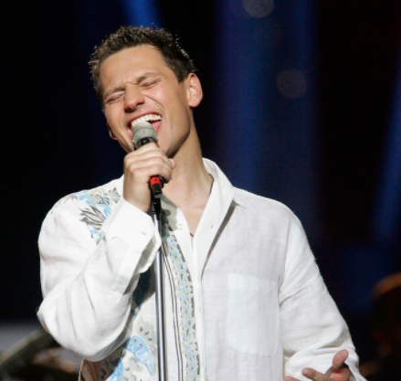

България в Eurovision Song Contest
Kaffe
Kaffe е българска джаз група, която е представи родната си страна в
конкурса за песен на Евровизия през 2005 г. Групата, която изпя песента , завърши 19-а на полуфинала.
Групата се състои от шест човека
| Орлин Павлов (Вокали)  |
Георги Янев (Китара) |
Милен Кукошаров (Синтезатор) |
Валери Ценков (барабани) |
Мартин Ташев (трумпет) |
Веселин Веселинов (бас китара) |